NEO Startseite: neue Zwischenüberschriften
- 8 Zwischenüberschriften auf der Startseite neu geschrieben. Sie sagen jetzt klarer, was NEO macht und was der Kunde davon hat. Wichtige Suchbegriffe wie „SEO“, „Google Ads“ und „Google Seite 1“ stehen jetzt in den Überschriften.
- Vorbild sind die zehn bestplatzierten Agenturen bei Google für vier Suchbegriffe in Berlin, abgerufen am 26.11.2026.
- Keine neuen Versprechen. Jede Aussage steht schon heute auf der Seite.
- Alle Zwischenüberschriften der ganzen Website sehen jetzt gleich aus: gleiche Größe, gleiche Schrift, gleicher Grauton im zweiten Teil. Auch „Ihre Ansprechpartner“ über der Fußzeile.
- Am großen Bildschirm hat jede Überschrift höchstens 2 Zeilen. Dafür wurden die Textspalten breiter gemacht, kein Text wurde gekürzt. Auf dem Handy ragt nichts über den Rand.
- Live geprüft auf 7 Seiten (Startseite, SEO-Agentur, drei Leistungsseiten, Über uns, Impressum) bei 1440, 1280 und 375 Pixel Breite.
Vorschau der ganzen Startseite öffnen Die neuen Überschriften sind gelb umrandet.
Vorher → nachher
| Abschnitt | Vorher | Nachher | Warum |
|---|---|---|---|
| Leistungen | Vier Disziplinen. / Eine Pipeline. | SEO, Google Ads, Social Media, Websites. / Ein Team. Mehr Anfragen. | Nennt die vier Leistungen beim Namen und dazu den Nutzen. So machen es die Agenturen, die bei Google vorne stehen. |
| Ablauf | Vier Meilensteine. / Keine Überraschungen. | Google Seite 1. / In 90 Tagen. Vier Meilensteine. | Holt das Hauptversprechen (Seite 1 in 90 Tagen, steht schon im Seitentitel) in den Abschnitt zum Ablauf. |
| Kennzahlen | Was wirklich zählt. / Anfragen. Nicht Klicks. | Ergebnisse, die zählen. / Anfragen. Nicht Klicks. | „Ergebnisse“ ist das Wort, mit dem die Konkurrenz diesen Abschnitt überschreibt. Zweite Zeile bleibt. |
| Kundenprojekte | Kicker „Kundenprojekte“ · Echte Marken. / Echte Zahlen. | Kicker „Referenzen“ · Echte Kundenprojekte. / Echte Zahlen. | „Referenzen“ und „Kundenprojekte“ sind die Wörter, die Besucher an dieser Stelle erwarten. Zweite Zeile bleibt. |
| Kundenstimmen | In ihren eigenen Worten. | Was unsere Kunden über NEO sagen. | Sofort klar, worum es geht. Fast alle Agenturen weiter oben bei Google benutzen diese Form. Der Markenname steht mit drin. |
| Vergleich | Was wir anders machen. / Sechs Punkte. | Was NEO anders macht. / Sechs Punkte. | Markenname statt „wir“. Das hilft, wenn Google oder eine KI den Abschnitt einzeln zitiert. |
| Gründer | Sie reden mit der Person, / die auch liefert. | Sie sprechen mit dem Gründer, / der auch liefert. | „Gründer“ ist genauer als „Person“ und steht schon so auf der Seite („Eine Notiz vom Gründer“). „Sprechen“ klingt etwas förmlicher als „reden“. |
| Kontakt | Lassen Sie uns / starten. | Lassen Sie uns reden. / Kostenlos. | Sagt, was als Nächstes passiert und was es kostet. „Kostenloses Erstgespräch“ steht schon im Text darunter. |
- Ansprechpartner („Zwei Inhaber. / Ein direkter Draht.“): Text bleibt, hat jetzt aber genau die gleiche Gestaltung wie alle anderen Überschriften (vorher feste 32 bis 48 Pixel, jetzt wie überall). Auf jeder Seite 2 Zeilen, am Bildschirm wie am Handy. Vorschlag für später: „Ihre Ansprechpartner in Berlin. / Zwei Inhaber, ein direkter Draht.“
- Fußzeile („Bewerten Sie uns“): ist schon klar.
- Angebote, Preise, Zahlen und Versprechen: alles unverändert.
Was die Konkurrenz bei Google vorne macht
- Suchbegriff und Nutzen in einer Überschrift, z. B. „Mehr Anfragen über Google und KI. Mit Website und SEO aus einem Team.“ (seo-revolution.com)
- Feste Abschnitte mit klaren Namen: Leistungen, Ablauf, Ergebnisse, Referenzen, Kundenstimmen, Kontakt.
- Kundenstimmen als Satz, z. B. „Was Kunden über uns sagen.“ (digital030.de)
- Gründer mit Namen, z. B. „Der Gründer: Simon Krebs.“ (digital030.de)
- Fragen als Überschriften im Bereich „Häufige Fragen“ (claneo.com, internetwarriors.de)
- Ortsangabe Berlin in mindestens einer Überschrift, und eine Handlungsaufforderung als letzte Überschrift.
- Meist 4 bis 9 Wörter pro Überschrift.
Google-Top-10 · Deutschland, Standort Berlin · 26.11.2026
- suchmeisterei.de
- digitalgrafik24.de
- sortlist.de
- berlin-onlinemarketing.de
- digitalagenten.com
- internetwarriors.de
- teamlewis.com
- digital030.de
- nsg-berlin.de
- agencies.semrush.com
- seo-agentur-berlin.media
- netzbekannt.de
- jungundbanse.de
- seosupport.de
- suchhelden.de
- seo-revolution.com
- peakace.agency
- claneo.com
- werbeagentur.de
- krick.com
- lau.do
- chris-andfriends.de
- webdesign-berlin.de
- sortlist.de
- webdesignagentur.de
- wedeon.de
- ux-amp.de
- 123-berlin-design.de
- feedbax.de
- seo-revolution.com
- werbeagentur.de
- ostend.digital
- omr.com
- grow.brandung.de
- blackflag-agency.com
- firststars.com
- siamakghofrani.com
- sortlist.de
- indeed
- dreikon.de
Einheitliche Gestaltung: vorher → nachher
| Wo | Vorher | Nachher (überall gleich) |
|---|---|---|
| Die meisten Startseiten-Überschriften | bis 84 Pixel groß, mit dem Bildschirm wachsend | 30 Pixel am Handy, bis 52 Pixel am großen Bildschirm (49 Pixel bei 1440) · fett · gleicher Zeilenabstand und Buchstabenabstand · zweiter Teil im gleichen Grau · Zeilen gleichmäßig verteilt |
| Leistungen | bis 52 Pixel, engerer Zeilenabstand | |
| Gründer-Notiz | bis 48 Pixel | |
| Ihre Ansprechpartner | feste 32 / 40 / 48 Pixel | |
| SEO-Agentur-Seite | 56 bis 96 Pixel | |
| Leistungsseiten (Websites, Google Ads, Social Media) | 64 bis 96 Pixel |
Der graue zweite Teil war je nach Abschnitt unterschiedlich hell (40 %, 45 %, 55 %). Jetzt überall 55 %. Damit die Überschriften trotzdem höchstens 2 Zeilen haben, sind die Textspalten breiter geworden (z. B. Leistungsseiten, Fragen und Antworten, Leistungen auf der Startseite, Gründer auf „Über uns“).
Prüfung der Zeilenumbrüche (vorher, Entwurf)
Zeilen pro Überschrift auf der Startseite in Version 1.0, also mit neuem Text, aber noch alter Gestaltung. Einige hatten 3 oder 4 Zeilen. Die Live-Messung danach steht im nächsten Abschnitt.
| Abschnitt | Großer Bildschirm (1440) | Handy (375) |
|---|---|---|
| Leistungen | 3 | 3 |
| Ablauf | 4 | 3 |
| Kennzahlen | 4 | 3 |
| Kundenprojekte | 3 | auf dem Handy ausgeblendet (wie heute live) |
| Kundenstimmen | 3 | 2 |
| Vergleich | 3 | 2 |
| Gründer | 2 | 2 |
| Kontakt | 3 | 2 |
| Ansprechpartner (unverändert) | 2 | 2 |
Live-Messung nach der Umstellung
Gemessen auf neotheagency.de am 26.11.2026. Jede Ziffer ist eine Überschrift, von oben nach unten, mit ihrer Zeilenzahl.
| Seite | 1440 | 1280 | Handy 375 |
|---|---|---|---|
| Startseite | 2 2 2 2 2 2 2 2 2 | 2 2 2 2 2 2 2 2 2 | 4 3 2 2 2 3 2 2 |
| SEO-Agentur | alle 1 oder 2 | alle 1 oder 2 | 1 bis 4 |
| Websites | 2 2 2 1 2 2 2 2 1 2 | 2 1 1 1 2 2 2 2 1 2 | 2 2 2 2 3 3 2 4 2 2 |
| Google Ads | 2 2 2 1 2 2 2 2 1 2 | 2 1 2 1 2 2 2 2 1 2 | 2 2 2 2 2 3 2 3 2 2 |
| Social Media | 2 1 2 1 2 2 2 2 1 2 | 1 1 2 1 2 2 2 2 1 2 | 2 1 2 2 3 3 2 3 2 2 |
| Über uns | 1 2 2 2 2 2 | 1 2 2 2 1 2 | 2 3 2 2 2 2 |
| Impressum (Ansprechpartner) | 2 | 2 | 2 |
Ergebnis: am großen Bildschirm nirgends mehr als 2 Zeilen. Auf allen Seiten dieselbe Größe (49 Pixel bei 1440, 44 bei 1280, 30 am Handy). Am Handy ragt nichts über den Rand und kein Wort steht allein in der letzten Zeile. Am Handy sind 3 bis 4 Zeilen normal, weil die Zeilen dort kurz sind.
Bildschirmfotos live
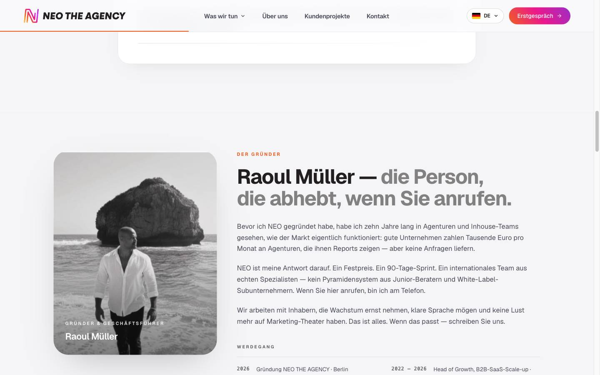
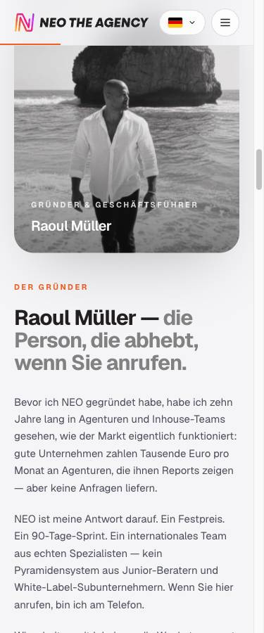
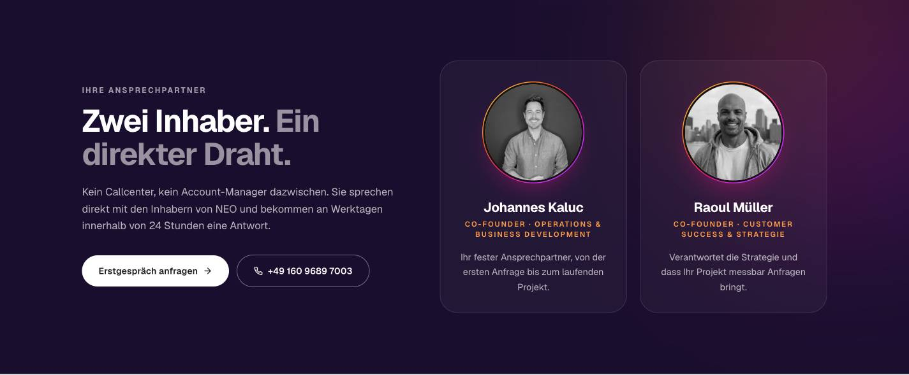
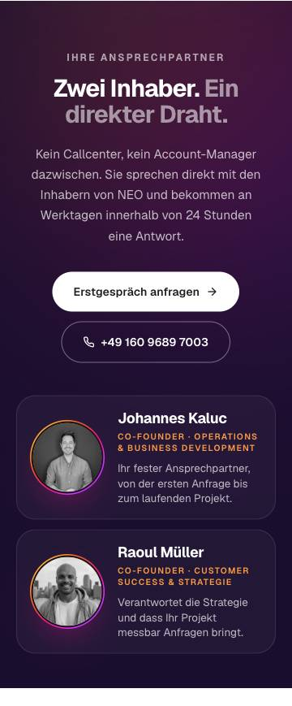
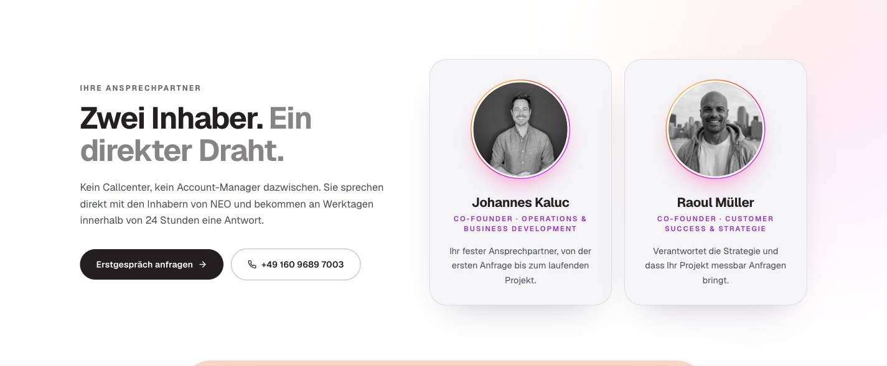
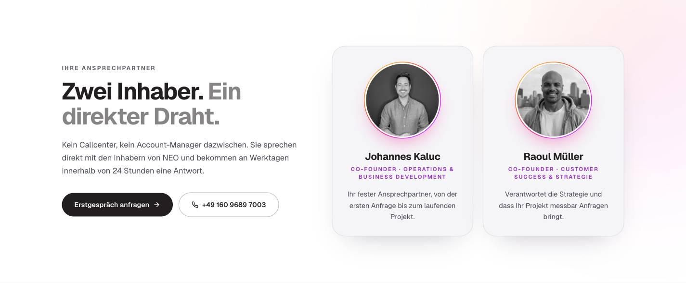
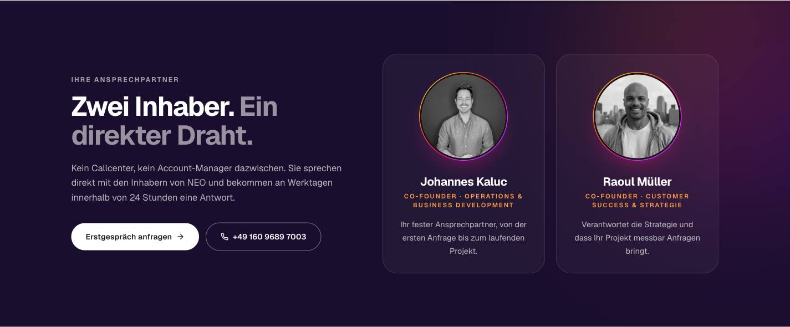
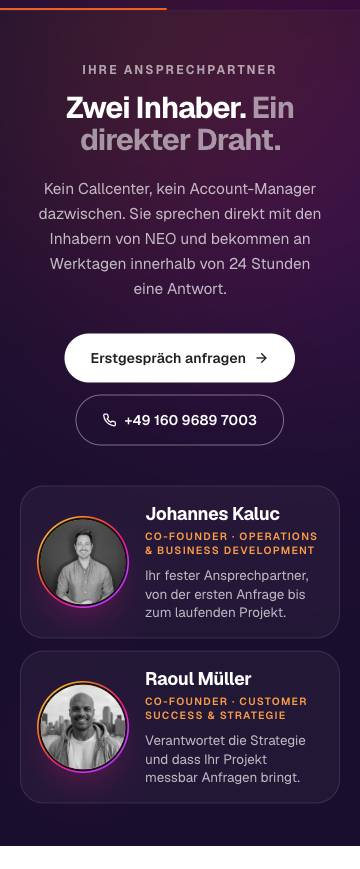
Ganze Seiten: Startseite 1440 · 375 · SEO-Agentur 1440 · 375 · Websites 1440 · 375 · Über uns 1440 · 375


Bildschirmfotos aus dem Entwurf (Version 1.0)
Überschriften in der Reihenfolge auf der Seite: 1 Leistungen · 2 Ablauf · 3 Kennzahlen · 4 Kundenprojekte · 5 Kundenstimmen · 6 Vergleich · 7 Gründer · 8 Kontakt · 9 Ansprechpartner · 10 Fußzeile. Nr. 4 gibt es auf dem Handy nicht, weil der Abschnitt dort ausgeblendet ist.
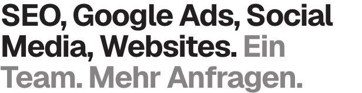
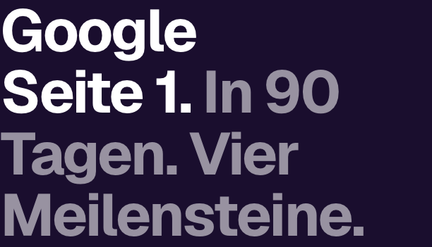
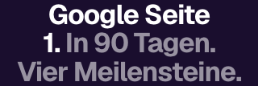
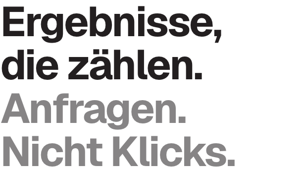
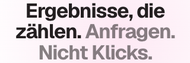
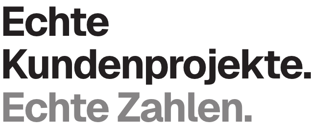
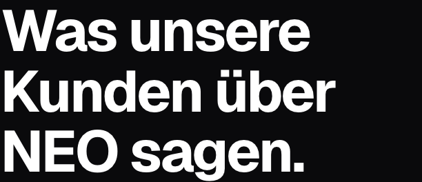
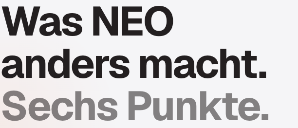
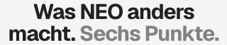
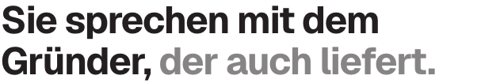
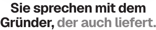
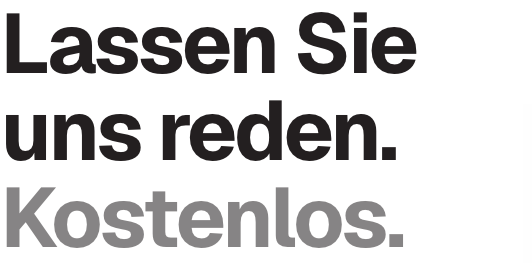
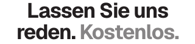
Liveschaltung und Kosten
- Liveschaltung: am 26.11.2026 nach Raouls Go in vier Schritten live gegangen: neue Texte (dba1994), einheitliche Gestaltung auf der ganzen Website (17cb3be), breitere Textspalten (e09079d), breitere Textspalte beim Gründer auf „Über uns“ (c339061).
- Zurück zum alten Stand: jederzeit möglich über die Sicherung „backup-pre-h2-2026-11-26“ (Stand vor allen Änderungen).
- Kosten: etwa 16 Firecrawl-Credits (8 Google-Abfragen, etwa 8 Seitenabrufe). Keine Semrush-Einheiten.
Änderungsverlauf
| Version | Datum | Änderung |
|---|---|---|
| 1.1 | 26.11.2026 | Live geschaltet. Einheitliche Gestaltung aller Zwischenüberschriften auf der ganzen Website samt „Ihre Ansprechpartner“, höchstens 2 Zeilen am großen Bildschirm durch breitere Spalten, Live-Messung auf 7 Seiten bei 1440/1280/375, Live-Bildschirmfotos, Sicherung zum Zurückgehen. |
| 1.0 | 26.11.2026 | Erste Fassung: 8 neue Überschriften, Google-Top-10 für 4 Suchbegriffe, Prüfung der Umbrüche bei 1440 und 375, Vorschau der ganzen Seite. |